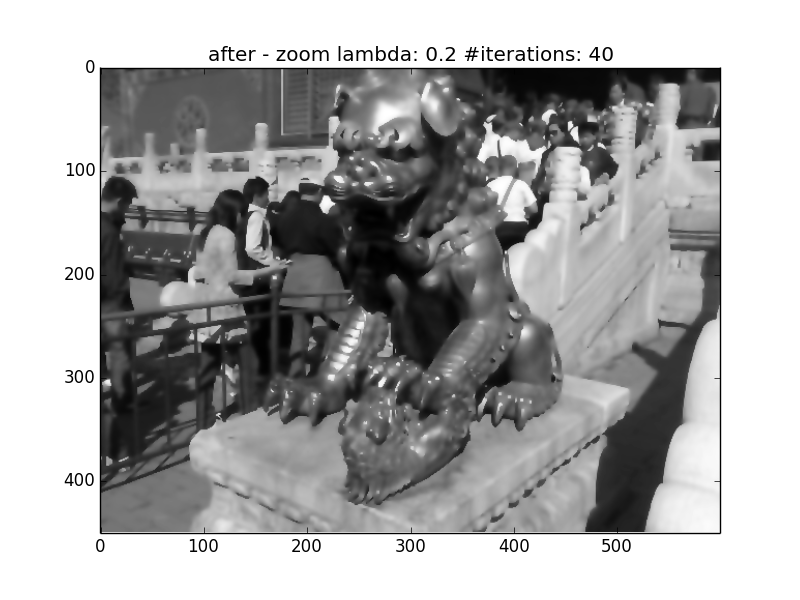
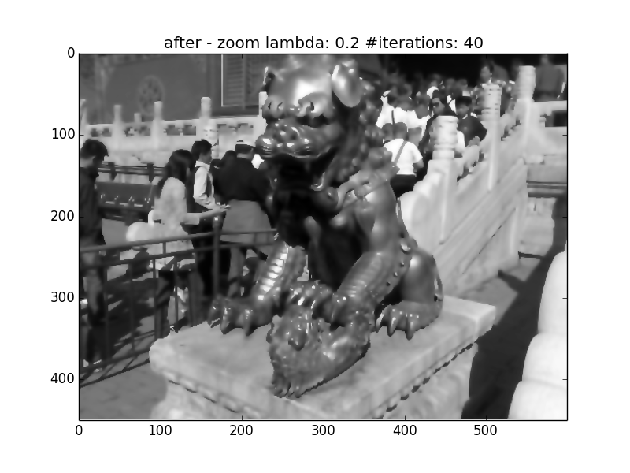

Anisotropic Diffusion Implementation with GPU Parallel Programming in OpenCL
Anisotropic Diffusion Implementation with GPU Parallel Programming in OpenCL
Wenshuai Ye, Yuhao Zhu
CS205: Final Project
Instructor: Thouis "Ray" Jones, TF: Thouis "Ray" Jones
Introduction
Image processing is a mathematical operation on signals of images. It includes image sharpening, image smoothing, image segmentation, etc. Well designed algorithms have been studied for these methods. However, for high resolution images, it would take a long time to run. It is important that image is processed and analyzed using image processing algorithms at minimum cost. By parallelizing of the algorithm, we can optimize the speed at which the image is processed. This project explores the parallel implementation of many sequential algorithms of image processing. The main objective of this project is to design some image processing algorithms such as Gaussian algorithm in smoothing in parallel mode. These parallel algorithms are able to work with different number of threads and to take all the benefits of the processors.
In image processing and computer vision, anisotropic diffusion, also called Perona–Malik diffusion, is a technique aiming at reducing image noise without removing significant parts of the image content via a partial differential equation (PDE), replaced the classical isotropic diffusion with,

This function is to make sure the diffusion is "stopped" across edges. Typically edges, lines or other details that are important for the interpretation of the image. Mathematically, the pixels can be updated iteratively by averaging the gradients of their four neighbors as the figure below, and the gradients can be approximated with the difference. g is an edge-stopping function and in our case, a Gaussian function.

In this project, our goal is to develop an efficient multifunctional image processing toolkit. This toolkit has multiple image processing functions such as smoothing, sharpening, denoising, motion blurring, and edge finding. In traditional image processings, image filtering are applied to exert various effects on photos. The center of a selected filter matrix has to be multiplied with the current pixel, the other elements of the filter matrix with corresponding neighbor pixels. In other words, only one pixel’s value is going to be changed at one time.
In our project, we plan to improve efficiency via parallel computing. We are going to use Anisotropic Diffusion algorithm as follows:

which is good at removing random noise. Averaging should only concern pixels that belong to the same region, to avoid artifacts at the borders between regions and to improve the denoising efficiency. Anisotropic diffusion resembles the process that creates a scale space, where an image generates a parameterized family of successively more and more blurred images based on a diffusion process. Each of the resulting images in this family are given as a convolution between the image and a 2D isotropic Gaussian filter, where the width of the filter increases with the parameter. The parallel computing can be adopted when we filter the image.
Methods
Method 1: Blockwise Parallel Programming
We partition the 2d image into multiple work groups, each with size (x, 2) where x takes in the value in [8, 16, 32, 64, 128]. We choose a relatively small height for each work group in that we read the value to the local buffer only when the one dimensional index is less than the width of the row and don't want that many threads to wait in the process. This method works best when the height of the image is relatively small.
Method 2: Columnwise Parallel Programming
This method sacrifices parallelization for less number of workgroups in total without changing the local size. Again, the local size is (x, 2) where x takes in the value in [8, 16, 32, 64, 128], and the height of the global size equals that of the local size. Since the global size does not cover the entire image, we use a loop within each work group to update the buffer and the output image pixels. This is definitely not the best method among three. We introduce an improved version in method 3, which utilizes the index trick.
Method 3: Columnwise Parallel Programming with Index Trick (Reused Buffer)
Because the size of our halo is greater than 0. The buffer we construct and update in the second method will have overlapped parts in the iteration. The index trick captures the feature and update the values only when necessary, as demonstrated in the image below (special thanks Ray for drawing the image).
Method 3: Blockwise Parallel Programming without Local Buffer
The last method is to get rid of the local buffer and read the pixel values from the global memory directly instead. Theoretically, reading from the global memory would be slow. However, in my system, this method outperforms the other three.
Results
The result from the both images shows that the last method outperforms the other two given that we optimize the workgroup. In the Harvard library case, this is followed by the method with the buffer index trick, which does a slightly better job than the rest


However, when we use a much smaller image, the block wise parallel method has the second better performance.
 


Acknowledgements
We thank Thouis "Ray" Jones and all TFs for providing guidance and support.
Contact information
Wenshuai Ye: wenshuaiye@g.harvard.edu
Yuhao Zhu: yuhaozhu@g.harvard.edu